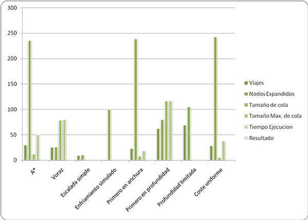
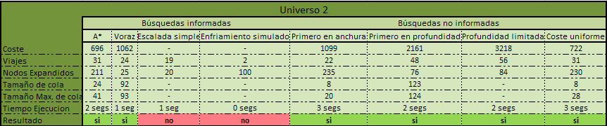
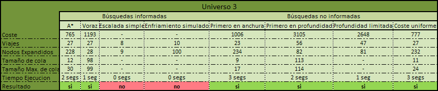
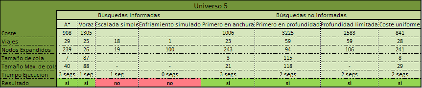
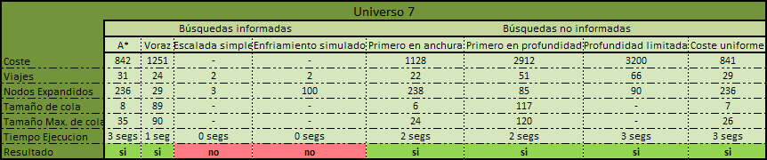

Ejemplos de ejecucion |
En este apartado se van a exponer resultados empiricos obtenidos de la ejecucion de la aplicacion con 10 universos y los 8 algoritmos de busqueda que hemos implementado para la resolucion del problema general. |
|
Como se aprecia en el cuadro resumen para el universo1 todos los algoritmos a excepcion de Escalada Simple y Enfriamiento Simulado (rara vez van a encontrar solucion) dan con una solucion al problema que se planteó. De este cuadro resumen podemos obtener los siguiente resultados:
Otra forma de representar esta informacion podria ser de la siguiente forma:  Notese que la medida del coste esta normalizada para poder apreciar el resto de valores en la misma grafica, de otro modo la escala seria demasiado elevada como para poder observar nada. Este tipo de estudio se puede realizar de todos los universos que exploremos, en particular nosotros vamos a mostrar 9 universos mas. Si se desea consultar el fichero que se utilizo en cada prueba, no hay mas que hacer click sobre el titulo. |
| 
|
| 
|
|
|

|
|
|
| 
|
|
|
|
|
| |
Como comentario general a todas las pruebas realizadas comentar lo siguiente:
- No hemos encontrado nunca solucion con Esacalada simple ni con Enfriamiento simulado, obviamente por las caracteristicas del universo.
- A* y Coste uniforme siempre estan a la par en cuanto al coste en horas del viaje.
- Primero en anchura siempre expande mas nodos y obtiene la solucion en menos pasos, atravesando menos planetas.
- Los algoritmos en profundidad, tanto primero en prfundidad como profundidad limitida obtienen siempre el camino con mas pasos pasos para llegar al destino
- Primero en anchura al expandir el que mas nodos tambien tendera a ser el menos eficiente en tiempo de todos los algoritmos.
Con todo lo dicho anteriormente dependiendo de que qeuramos optimizar deberemos utilizar un algoritmo u otro:
- Optimizar coste en horas: A! y Coste uniforme.
- Optimizar viajes entre planetas: Primero en anchura.
- Optimizar tiempo: Primero en profundidad, tanto limitada como primero en profundidad.
- Optimizar memoria: Primero en anchura, expande gran cantidad de nodos, pero no muchos a la vez.
Si se quiere consultar los cuadros a traves de una hoja de calculo esta disponible a traves del siguiente enlace:
- Resumen Comparativa para Microsoft Office 2007
- Resumen Comparativa para Microsoft Office 2003